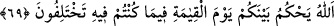
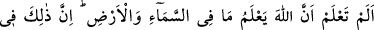
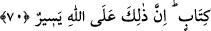

uzaklaştırmak ister.
69. Allah kıyâmet gününde, ihtilâf etmekte olduğunuz konulara dair aranızda
hüküm verecektir.
“Allah” dünyada delillerle ve âyetlerle açıkladığı gibi “kıyâmet gününde” sevab ve
cezâ ile, din hususunda “ihtilâf etmekte olduğunuz konulara dâir aranızda” sizden
mü’min olanlarla kâfir olanlar arasında “hüküm verecektir.”
70. Bilmez misin ki, Allah, gökte ve yerde ne varsa bilir? Bu, bir kitapta (levh-i
mahfuzda) mevcuttur. Bu (eşya ve olayların bilgisine sahip olmak), Allah için çok
kolaydır.
“Bilmez misin ki,” buradaki soru takrîr/tespit içindir. Yani ‘Şüphesiz sen
bildin/bilirsin’ demektir. “Allah, gökte ve yerde ne varsa bilir?” Kâfirlerin dedikleri ve
yaptıkları da dâhil olmak üzere hiçbir şey Allah’a gizli kalmaz. “Bu,” yâni gökte ve
yerde olan her şey “bir kitapta” levh-i mahfuzda “mevcuddur.” Meydana gelmeden
önce orada yazılmıştır. Biz bildiğimiz ve kaydettiğimiz halde onların durumu seni
kederlendirmesin.
“Bu” zikredilen bilme, kuşatma ve levh-i mahfuzda sâbit kılma “Allah için çok
kolaydır.” âsândır. Çünkü O’nun ilmi ve kudreti, zâtının muktezâsıdır. Hiçbir şey O’na
gizli ve zor olmaz.
Yukarıdaki âyetlerde bâzı işâretler vardır:
1- Tâliblerden her grubun izlediği bir kanun/şerîat, her kavmin gittiği bir yol vardır.
Onların sâkini oldukları bir makam ve yerleştikleri bir mahal vardır. Her topluluğu
yerleştikleri yere bağlamış, hareket eden her şeyi kendilerine mahal kıldığı yere
ulaştırmıştır.
Kulluk sergisi âbidlerin ayaklarıyla çiğnenmiştir. İctihad/gayret sahası gayretli
meşakkat ehli kimselerle mâmûrdur. Ma‘rifet sahiplerinin meclisleri âriflere lâzım olan
şeylerle ünsiyetlidir. Muhabbet ehlinin konakları vecd ehlinin hazır oldukları yerlerdir.
Sülûk ve vusûl makamlarının farklılığı sebebiyle Allah Teâlâ’ya dâvet de farklılık
gösterir. Onlardan kimisi insanları kulluğun hakîkatinde fenâ kapısından çağırır. Şu âyet
bunu ifâde eder: “Daha önce, sen hiçbir şey değilken seni de yaratmıştım.” (Meryem,